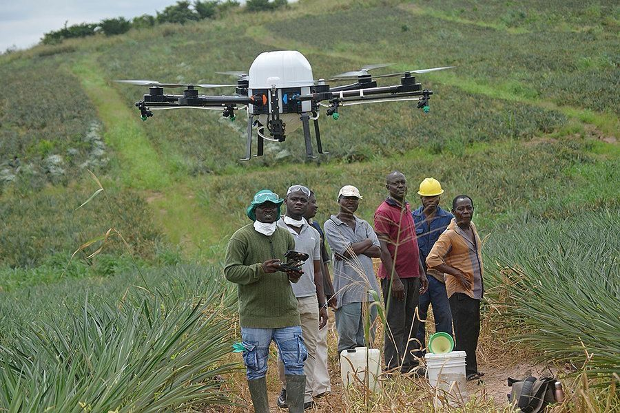

In an age where technology drives opportunity, millions of young minds in Ghana's underserved communities remain disconnected from the digital revolution. Without exposure to digital tools, they risk being left behind in an ever-evolving world.
The Community Digital Fair (CDF) is here to change that.
Only 29% of youth in deprived areas have access to basic digital tools.
60% of rural households lack internet connectivity.
Without early digital exposure, innovation and potential remain untapped.
Ghana's youth has a median age of 20.7, and are eager to learn and innovate. Digital skills can unlock careers in freelancing, e-commerce, and app development. But first the youth have to be nudged into curiosity.
"Curiosity is a crucial driver for innovation because it fuels the desire to explore, question, and seek new solutions, leading to the development of novel ideas and breakthroughs."
Local challenges like farming and waste management can be solved with technology, if curiosity in tech is ignited.
